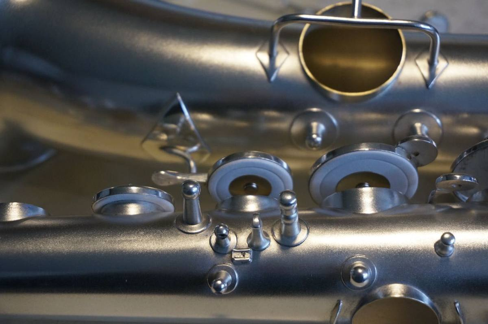
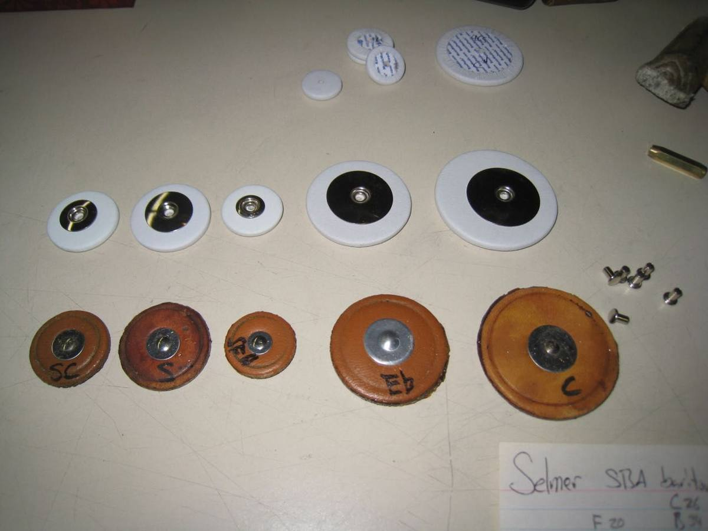
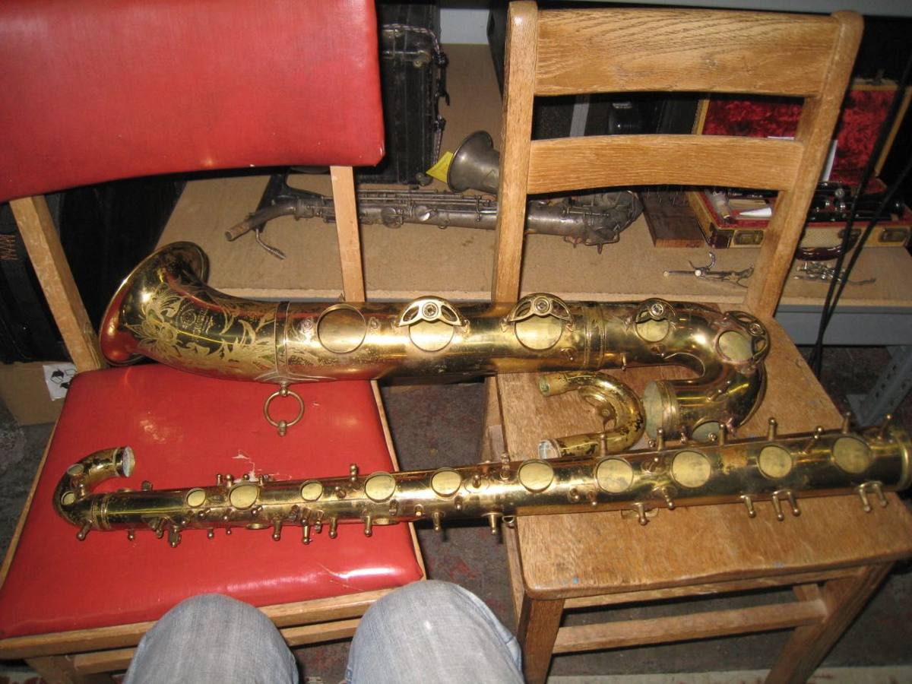
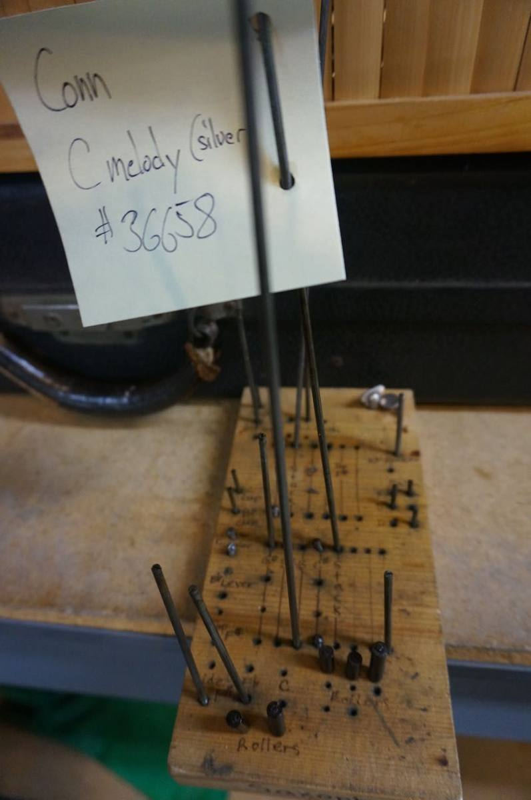
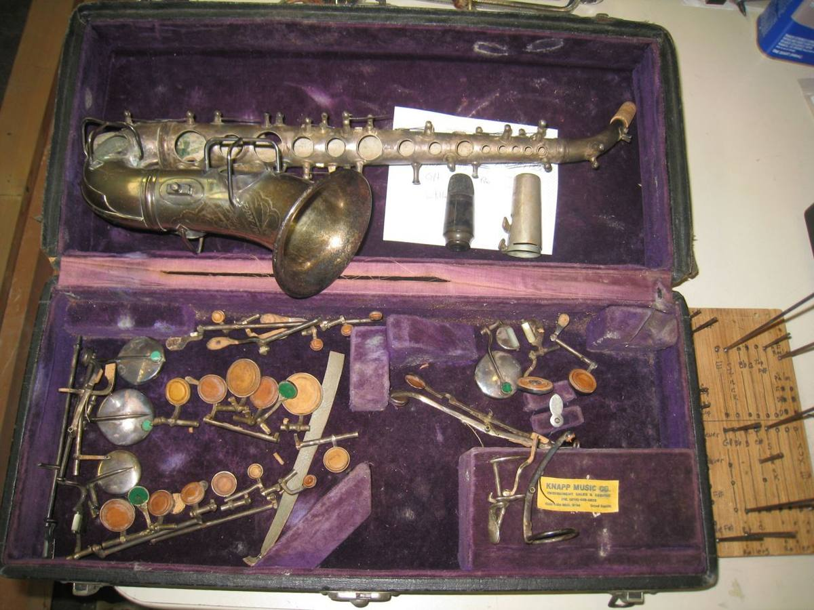
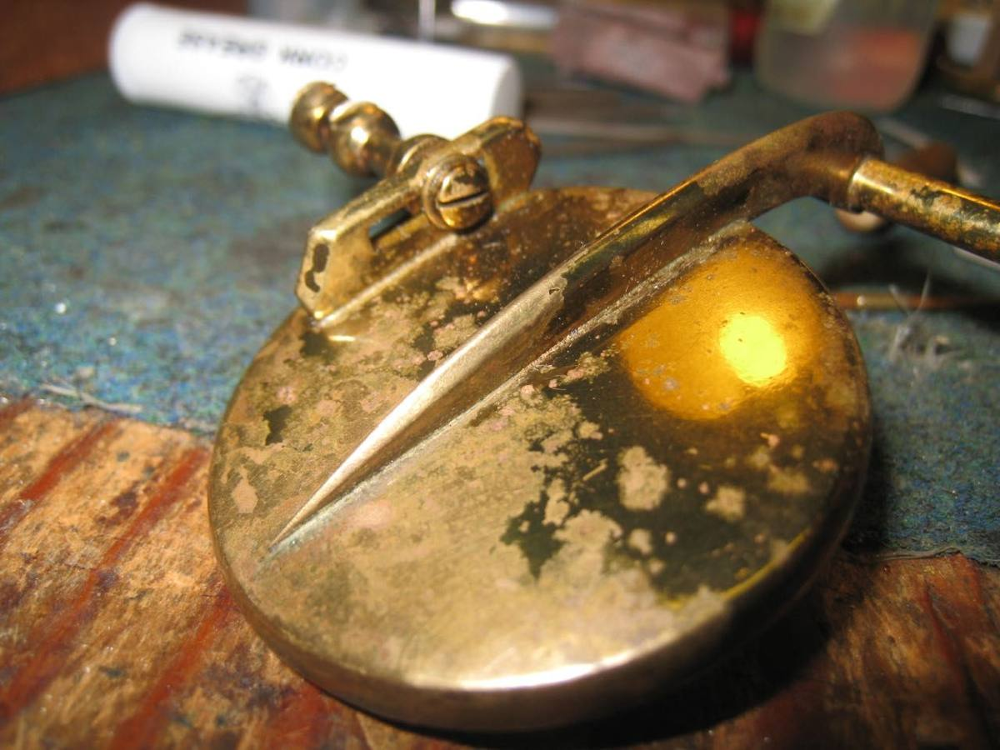
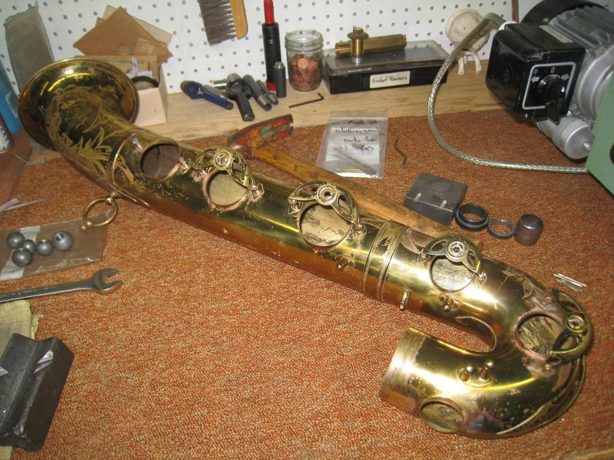

Repaired by someonewho plays.
Scott Granlund was born in Port Angeles in 1959. He performs regularly with La Banda Gozona, the Northstar Saxophone Quartet and orchestras and chamber ensembles around Seattle, and has played most sizes of saxophone, from the tiny sopranino to the mighty basso.

A family's 1913 C melody, mid-overhaul.
What comesthrough the door.
Repairs & adjustments SAX · CLARINET
Leaks, sticky pads, bent keys, cracks pinned so well you can't find them.
Overhauls YOUR CHOICE OF PADS
Full re-pads with brown goat skin or white kangaroo, and a few other choices along the way.
Mouthpiece extensions CUSTOM
Newer mouthpiece on an older sax and it goes sharp halfway on the neck? An extension fixes that.
Rentals & lessons CLARINET · SAX
Clarinets for rent, plus lessons on clarinet and saxophone.
Horns & mouthpieces for sale UPDATED LIST
Saxophones, clarinets and mouthpieces Scott has gone through himself. link live sale list
Pick yourpads.
Every sax overhaul starts with a choice. Here are the two Scott keeps in stock.
Brown goat skin
The industry standard saxophone pad. The one in stock has a medium-firm felt and a natural brown leather skin that isn't as sticky as the "beauty" Italian shoe-leather pads horn makers use.
White kangaroo
Thin and quite firm, so they respond quickly and crisply, and they're the least likely to stick to the tone hole. Kangaroo leather's durability can't be matched: these pads don't tear and last a very long time.
About 1/3 more than brown
Back in service.
A rare low-A Selmer baritone, a family's 1913 C melody, a Pan American soprano that came back to life. A few from the bench.





A few commentsfrom customers.
Straight from the notes and cards people send back with their horns.
"I can find no evidence of a crack or of nine pins. You are definitely skilled my friend."
"Thanks for keeping my horns tight!"
"Thing sounds like a young stallion instead of old mare."
"Thanks for all the great repairs and adjustments over the years. You've been patient and creative when dealing with my fussiness! Bravo!"
"Thank you! It is (bass clarinet) wonderful!"
"Your improvements were great! My thumb is much happier!!"
By appointment
Monday to Friday, 10am to 6pm. Call or email first so Scott's at the bench when you arrive.